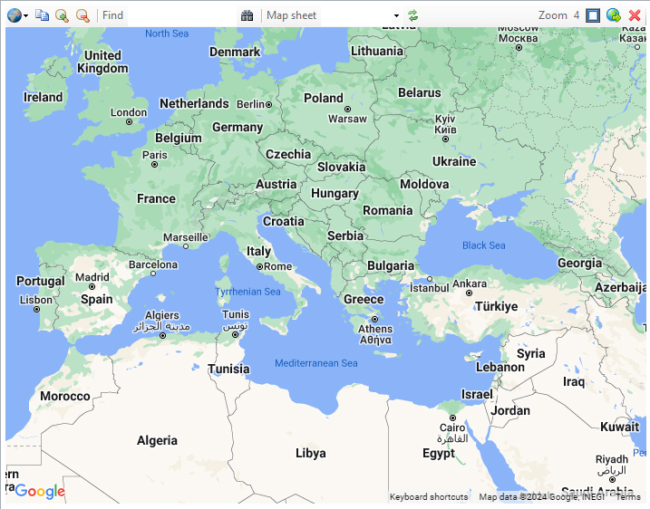
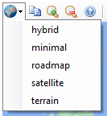
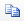
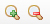
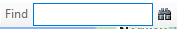
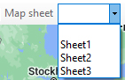
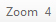
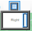
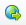
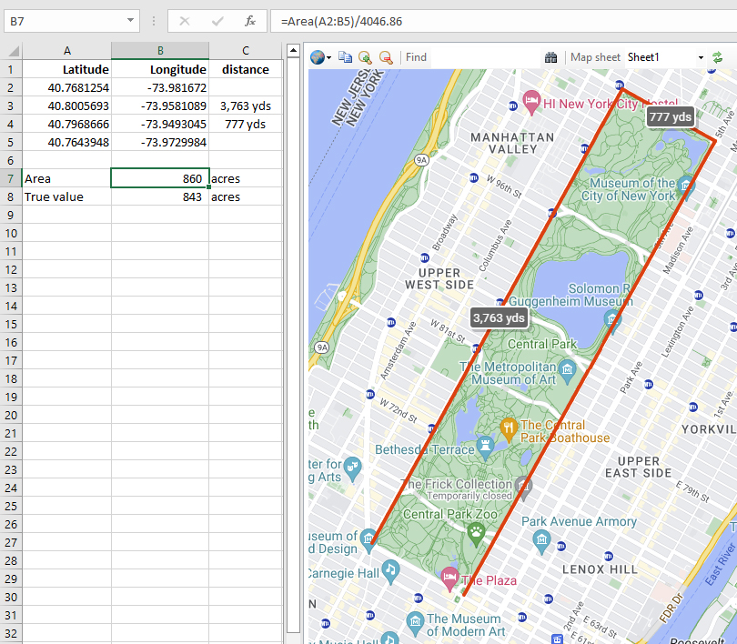

The Map Pane
Displays maps that are generated automatically from the contents of a worksheet that have a specific format.

Controls
The icons at the top control the content and format of the map.
|  | Selects the Map style. In addition to the standard styles, there is a minimal style which is useful for focussing on the annotations drawn on the map, rather than the map itself. |
|  | Copies the map image to the clipboard. To avoid copying the tooltip text, use Control‑C rather than clicking on the icon. |
|  | Zoom in/out |
|  | Searches for a place. Enter either a name "The Taj Mahal" or a pair of coordinates "46.172214,3.161782". The target will be highlighted with a push-pin. |
|  | Draw the map of the chosen sheet. Selecting blank displays the default map. Re-selecting the same sheet creates a fresh map using the latest updates to the sheet. |
| Refreshes the map, which is re-drawn without interim modifications to the sheet. | |
|  | Displays the current Zoom. |
|  | Sets the quadrant where the map is displayed relative to the worksheet: Left, Right, Top, Bottom. |
|  | Displays the address bar, turning the Map Pane into a standard browser page. The close icon returns to the map pane. |
| When displaying the address bar, returns to the map pane. When displaying the map pane, hides it. |
Interacting with the map
The map can be panned by dragging and zoomed with the scroll wheel.
Right-clicking puts the Latitude,Longitude in the Find field and adds the Latitude and Longitude in the next free row of the worksheet.
In this example, the 4 corners of Central Park were clicked and the Geodesix Area function calculates the area of the park in m². (An acre is 4046.86 square metres):
The error is a modest 2%